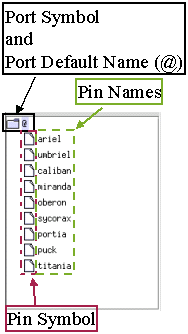
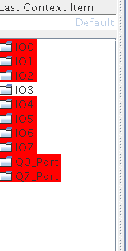

The navigation area shows the ports of the current start label ed test that contain
output pins (if the format mode is selected, only the failed pins within this format are
shown).
The
figure below shows the navigation area of the error map with the selected pins and the symbols
used.
Note that this area will also show differential pins if you are using an application
where differential pins have been defined.

Pins, symbols or ports with failures are highlighted with a red background, as the figure
below shows.

Functional changes
Introduced before SmarTest 6.3.2
SmarTest 7.4.4: Red-colored highlights for failed pins, symbols and ports.